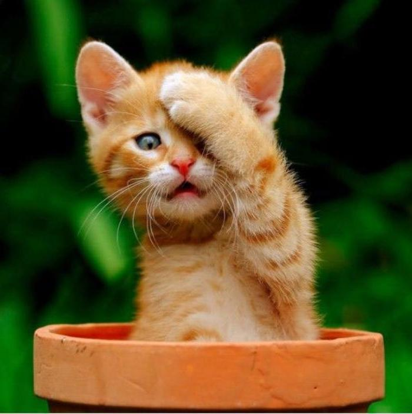

Пират со шхуны разбившейся на Каймановых островах
Категория : Котенок дворовый
2 502 p. 4 900 р.
У нас дома живет котик. Как только он появился, мы назвали его Маркизом за его красоту и гордый нрав. Но он никак не хотел отзываться на это имя. А вот имя Пират ему понравилось. Оно ему очень идет, ведь он сибирской породы и шерсть у него длинная, пушистая и мягкая, как будто настоящий пух.